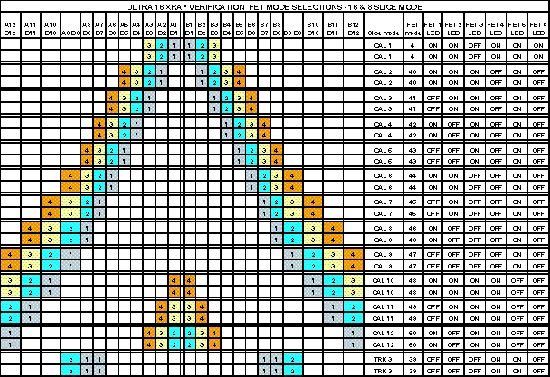
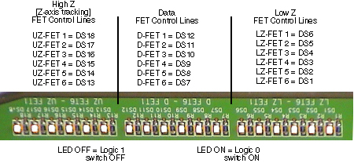

Proprietary to General Electric
Direction 5114045-800, Rev# 10
LightSpeed 4.X Service Information (Advanced)
Proprietary to General Electric |
| Required Persons | Preliminary Reqs | Procedure | Finalization |
|---|---|---|---|
| 1 |
This procedure involves the DAS Control Board (DCB) and Elastomer FRUs. A summary of the troubleshooting process is as follows:
First: Determine which FET line is Shorted or Open by using Interconnect/X-ray verification scans.
Second: Determine if DCB board is sending correct FET command signal or isolate source chassis.
Third: Remove top covers to “find” shorted FET control signal.
END LEVEL 1, on site troubleshooting.
Select and run Interconnect/X-Ray verification scans within the DAS tools.
No failures indicate that FETs controlling the Data Acquisition modes are okay.
A fail condition is a failure of a group of channels.
Using Scan Analysis, plot each of the X-Ray verification scans (from step 1), and compare the values to the specs.
Look for plots that appear abnormal.
Determine which channels are correct and which are not, by comparing the actual output count values to specs. Based on the failing channels, it can be determined which FET control line is bad.
Illustration 1 and Illustration 2 show the slice modes and the corresponding FET control lines.
Illustration 1: Applications FET Mode Selections - 16 Slice Mode

| NOTE: | For a scalable, full size version of Illustration 1, click on the PDF icon below. |
Media File 1: Full Size Illustration: Applications FET Mode Selections - 16 Slice Mode

Illustration 2: X-Ray Verification FET Mode Selections - 16 & 8 Slice Mode

| NOTE: | For a scalable, full size version of Illustration 2, click on the PDF icon below. |
Media File 2: Full Size Illustration: X-Ray Verification FET Mode Selections - 16 & 8 Slice Mode

Check the FET control signals coming from the DCB.
Within DDC, prescribe a stationary scan, without X-Ray, using FET Over-ride modes All ones and All zeros. This will burn all the LEDs ON or OFF. The gantry should be positioned so that the FET LEDs located in the backplane are visible (3 o’clock or 12 o’clock).
Illustration 3: FET LEDs, located on Right DAS Chassis Backplan

For each acquisition mode, check FET LEDs on the backplane. Make sure that the FET selections are correct, and that they are not shorted or open. The FET modes for Data and Z channels for the scans are shown in Illustration 1.
If a FET control signal is shorted, it is important to know the FET number and the control signal (data channels or high Z channels). The wrong FET control signal can be caused by either the DCB or a short under any interposer connection. It is best to isolate the chassis, to help in finding the short.
Carefully disconnect the right chassis data cable (between center and right chassis).
Carefully disconnect the center chassis data cable (between center and left chassis).
If the short is no longer present, then the short is in the center chassis DAS/detector interface connection.
Once the fault is isolated to the chassis, the only way to find the short is to remove and clean each interposer connection and reassemble. Make sure ESD precautions are used.
END LEVEL 1, ON SITE TROUBLESHOOTING
Escalate problem.
Collect all data gathered during the above procedures.
No finalization required.